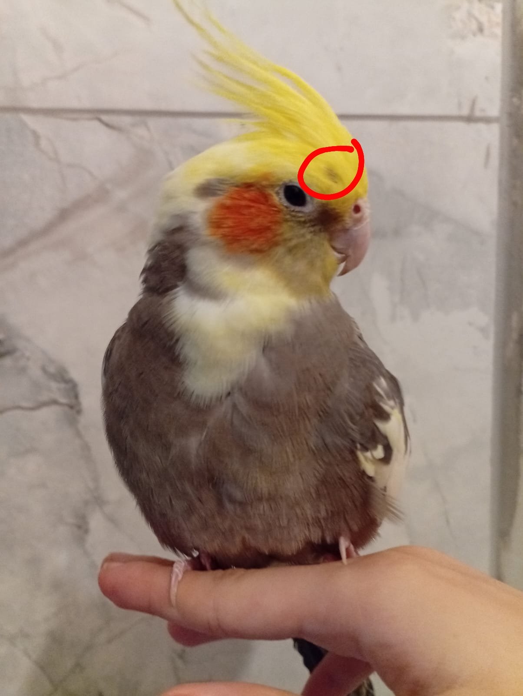

01
Nilou
Essa é uma calopsita fêmea chamada Nilou. Ela teve cinco filhotes.
Para identificá-la é simples: ela é a mais velha e, consequentemente, maior. Também possui apenas uma pinta preta perto do olho.